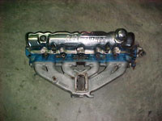
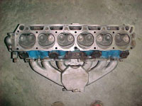
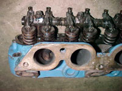
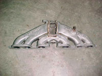
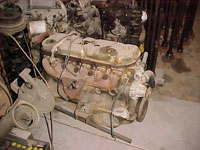
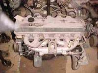
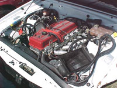

|
 |
|
|
|
Australian Inline Sixes
|
|||||||||||||||||||||||||||||||||||||||||||||||||||||||||||||||||||||||||||||||||||||||
In 1960 Ford Australia introduced the 144ci and 170ci engines, available in the new Falcon. Both had 4 main bearings and integral intake manifold. In 1965 the engine was enlarged to 200ci, still with 4 mains and the integral manifold. In 1967 a redesign adds three more main bearings, for a total of seven, to the integral manifold 170ci and 200ci sixes. In 1968 the engine block deck heights are raised to allow an increase in stroke to give 188 and 221ci. These engines are rated at 115 and 135 BHP respectively. A year later the compression ratio is increased and 5 BHP added.In 1970 the blocks are again raised. There is a new 250ci to go along with the 200ci. The two engines share bore dimensions, blocks, and heads, but the 200’s have much longer connecting rods.
  Later in 1970 the 250-2V is introduced with a removable alloy intake manifold and two-barrel Stromberg carburetor. Along with a free flow tubular exhaust header, this raises the output of the 250 to 155 BHP.  Not many changes occur until 1976. With the introduction of the XC Falcon comes a new cast iron crossflow head. The cylinder block has the same dimensions as the earlier engines but is not interchangeable. The crossflow head adds some power and torque. These engines are the first of the emission control engines. The crossflow head loosely follows the Cleveland combustion chamber arrangements, using Cleveland rocker arms, fulcrums, springs, retainers and lifters. In 1978 this engine gets an alloy head and a two-barrel Weber carburetor. This adds a small amount of power, but is much lighter and slightly more economical. Later an EFI version of the engine is released with Bosch Jetronic fuel injection. The Crossflow engine still bears quite a few common components with the 250s from the 70s (oil pump, water pump, distributor, crank, pistons and rods).
 In 1988 a major change to the venerable 250 occurs. The engine is revised to have a chain driven overhead cam alloy head and is available with multi-point EFI and single point TBI injection. The bore is reduced to help with emission control. The TBI 3.2 liter engines are dropped in 1990 leaving only the 3.9l MPEFI. This is rated at 185BHP and proves to be quite durable. In 1991 it was updated and enlarged to 4 liters with a small power increase to 195 BHP. The engine management also takes care of the A/C and auto transmission chores.
 In 1998 there is a major change when the engine is updated again to have larger main bearings and a ladder frame main bearing support integral with the cast alloy oil pan, there is also a variable camshaft timing option added, with this the engine gives 220BHP and 370nm torque. This gives performance in the car within 5% of the 5 liter V8. This engine is in current production, however there are reports that Ford will go to a new DOHC, 4 valve with variable valve timing in the next version of the inline six.
Note: Engines are in order by date of manufacture, not cubic inches.
|
|||||||||||||||||||||||||||||||||||||||||||||||||||||||||||||||||||||||||||||||||||||||

[ home ]
Copyright 2012 - Classic Inlines - All Rights Reserved